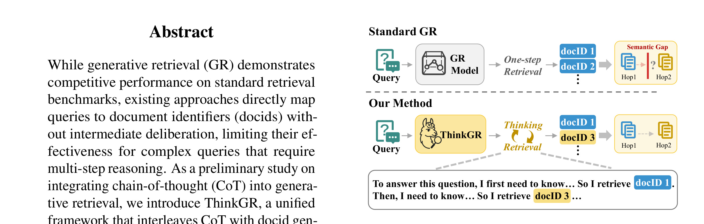
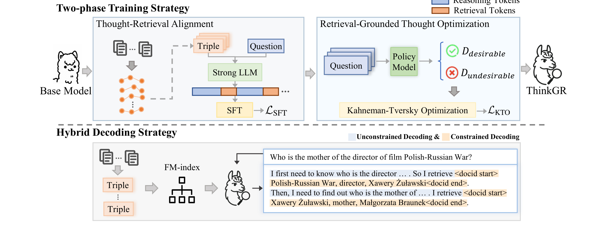
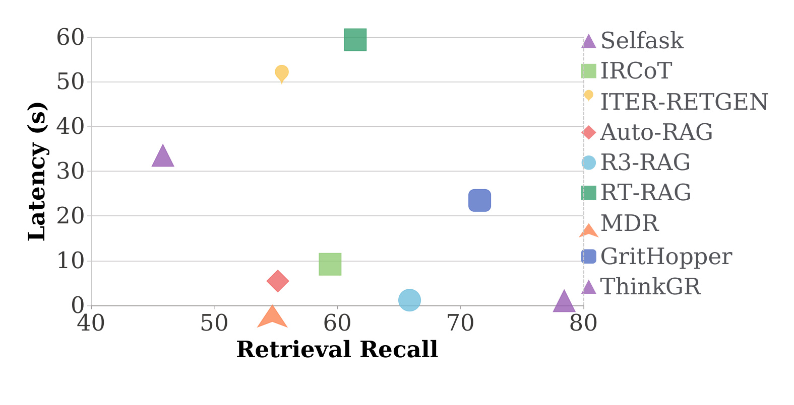

这里精读一篇 2026-05-21 submitted 公开的论文《Integrating Chain-of-Thought into Generative Retrieval: A Preliminary Study》。中文可译为《把 Chain-of-Thought 接入生成式检索》。论文链接：arXiv:2605.22358。作者为 Wenhao Zhang, Ruihao Yu, Yi Bai, Zhumin Chen, Pengjie Ren；机构/团队记录为 Shandong University。代码/项目页状态：未核验到独立代码仓库。
1. 背景和问题
生成式检索把 retrieval 转成 seq2seq：输入 query，模型直接生成目标文档 ID。这个范式端到端、可和语言模型共享架构，但对多跳问题很吃亏。复杂 query 的答案文档不一定和原始 query 表面语义相近，模型需要先找中间实体，再通过中间证据定位最终文档。标准 GR 没有显式思考过程，容易把语义桥接压进一个短 docid 输出里。ThinkGR 的问题是：能不能在同一个生成过程中交替产生 thought 和 docid，让模型既保留 generative retrieval 的端到端优势，又具备多步推理能力。

Figure 1 很直观地说明了问题：标准生成式检索从 query 直接生成 docid，中间没有显式 deliberation；ThinkGR 则在同一输出序列里交替生成 thought 和 docid。多跳检索的难点正是语义桥接，最终文档可能和原始 query 表面相距很远。如果模型不能先找中间实体，就很难一步命中。
这篇论文放在今天的调研里，主要因为它把一个热门概念落到了具体链路。它把生成式检索从一次性 docid 生成推进到“想一步、取一步”的统一序列过程。推荐和搜索链路中，复杂 query 往往需要跨文档/跨实体推理，ThinkGR 正好提供了可训练的中间 deliberation 形态。 如果只看标题，很容易把它理解成又一篇泛泛使用 LLM 或推荐系统的工作；但从原文的任务设定、图表和实验看，它真正关心的是系统中哪一个环节最脆弱、哪一个中间表示最需要被重新设计。对工程读者来说，先厘清这个问题，比记住模型名更重要。
2. 方法
ThinkGR 设计 semantic triple representation，把文档压成自然语言三元组，减少自由 thought 与结构化 docid 之间的断层。训练分两阶段：Thought-Retrieval Alignment 先用 SFT 对齐思考-检索链，让模型学会什么时候思考、什么时候输出 docid；Retrieval-Grounded Thought Optimization 再用检索结果反馈优化 thought 质量。推理时使用 hybrid decoding：thought token 用 unconstrained generation，docid token 用 constrained decoding，动态切换。这样模型不需要多次外部 LLM-retriever 调用，而是在单次 forward 风格的生成链里完成多跳检索。

Figure 2 是方法核心。上半部分是两阶段训练：先对齐 thought-retrieval pattern，再用 retrieval-grounded feedback 优化 thought 质量。下半部分是 hybrid decoding：自然语言 thought 无约束生成，docid 片段则进入受约束解码。这样既允许模型自由推理，又保证检索目标落在合法 ID 空间。
方法上可以把它拆成三层理解。第一层是输入输出边界：模型或系统到底读什么、产出什么、产物是否能直接进入下游链路。第二层是训练或优化信号：论文使用的是监督、强化、合成标签、结构约束还是运行时验证。第三层是部署边界：高成本模块是否在线、是否可缓存、是否有回滚与审计、是否会影响已有召回/排序/推理服务。沿这三层看，论文的贡献就不会只停留在“用了 LLM”或“加了一个模块”。
对比已有方法，本文的共同特点是把自由度收窄到可验证形式。Airbnb 把 LLM 合成限制在 listing pair 和 seed language 上；GCRS/ThinkGR 把生成约束到 semantic ID 或 docid；VPO 把多样性定义到 reward vector；Gated DeltaNet-2 把长期记忆压进可训练的 erase/write state update；MOSS 则把源码改写放进 trial worker 和 verdict pipeline。这样的设计比完全开放的生成更不浪漫，但更接近可落地系统。
3. 实验结果
论文在 HotpotQA、2WikiMultiHopQA、MuSiQue、MoreHopQA 四个多跳检索数据集上评估 recall。ThinkGR 平均提升约 6.86%，在需要多跳桥接的任务上比标准 GR 和部分多步检索方法更强。效率图显示，ThinkGR 比 LLM-driven multi-step retrieval 延迟更低，因为它不需要每一跳重新调用模型和检索器；但相比完全隐式检索，显式 thought 仍带来 token 成本。消融说明两阶段训练和 hybrid decoding 都必要，docids-only 变体尤其在困难数据集上退化。

Figure 3 把 recall 和 latency 放到同一平面。ThinkGR 的定位不是最低延迟，而是在不多次调用外部 LLM-retriever 的情况下获得高召回。对工程系统来说，这个图比单一 recall 更有意义：多步检索如果每一步都要跨服务调用，延迟很快不可控；统一生成过程可以把一部分推理成本收敛到模型内部。
实验解读时我更关注三个问题。第一，指标是否和论文主张一致：例如冷启动搜索不能只看生成文本质量，必须看检索/排序样本是否有区分度；后训练多样性不能只看单次 pass@1，还要看 best@k。第二，消融是否真的切中了核心机制：去掉 seed、去掉 structured generation、去掉 hybrid decoding、合并 erase/write gate 或删除验证回放，应该能解释主要退化。第三，实验是否给出工程成本信号：延迟、token cost、吞吐、代码可用性、线上部署形态或回滚机制，决定它能否从论文进入系统。
这篇论文的证据整体是有价值的，但不能过度外推。公开 benchmark、预印本实验和工业摘要都只能证明某个受控条件下的收益；真实推荐/搜索/Agent/LLM serving 系统还会受到流量分布、库存变化、硬件、权限、隐私、灰度策略和监控口径影响。因此这份笔记把实验当作“方向证据”，不把它写成确定性工程结论。
4. 总结
对搜索/推荐链路，它说明复杂用户意图可以被拆成中间 reasoning target，而不一定只能依赖 dense embedding 一步近邻。对 LLM/RAG，它提供了“生成式检索器内部化多步检索策略”的样本，可能用于个性化搜索、商品问答和知识库导航。
4.1 我的判断
我认为这篇论文最值得保留的不是单个指标，而是它对系统边界的处理。它没有把所有问题都交给一个更大的模型，而是明确哪些信号要生成、哪些信号要约束、哪些信号要留给下游检索/排序/验证/推理框架。这个思路对于后续做推荐系统和大模型交叉非常重要：LLM 的能力要变成系统收益，必须经过候选空间、约束解码、reward、缓存、回放或人审这些接口。
4.2 工程启发与复现建议
第一，复现时不要从完整系统开始，应先复现最小闭环：输入、约束、指标和一个可替换 baseline。第二，所有生成中间产物都要保留可追溯来源，尤其是合成 query、CoT、semantic ID、docid、reward vector 或自改写 patch。第三，线上前要设置反事实检查：去掉 LLM 信号、打乱中间表示、降低刷新频率或替换 reward，看指标是否仍然成立。第四，要把成本作为一等指标，包含 token、GPU、延迟、工程复杂度和出错后的回滚成本。
4.3 局限与后续跟进
局限主要有四点：ThinkGR 是 preliminary study，真实工业召回里的候选规模、索引更新和低延迟约束更严。；thought token 增加推理长度，在简单 query 上可能得不偿失。；多跳 QA benchmark 的 recall 不能完全代表推荐/搜索中的转化或满意度。；没有核验到代码，hybrid decoding 和训练数据生成细节需要自行复现。。这些局限并不否定论文价值，但决定了它适合先作为研究原型或局部链路增强，而不是直接替换既有生产系统。
后续跟进建议：在商品搜索的属性链路 query 上测试 thought-docid 交替是否提升召回。；比较 ThinkGR 与普通 RAG 多轮检索在延迟和召回上的成本收益。；关注后续代码开源和更大 docid 空间实验。。本轮自动化已经下载 PDF、裁剪关键图表并生成本地笔记；如果本笔记字符数低于 10000，是因为本轮只保留了已在 PDF、arXiv 页面或可访问链接中核验的事实，没有为满足字数硬补未核验实现细节。